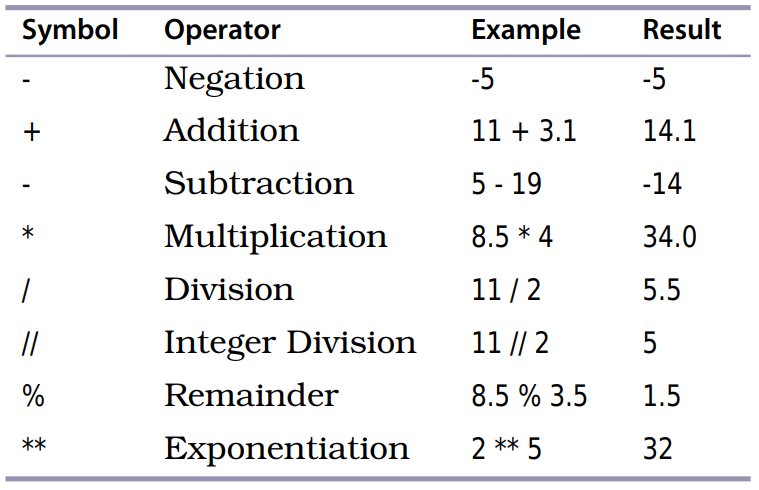
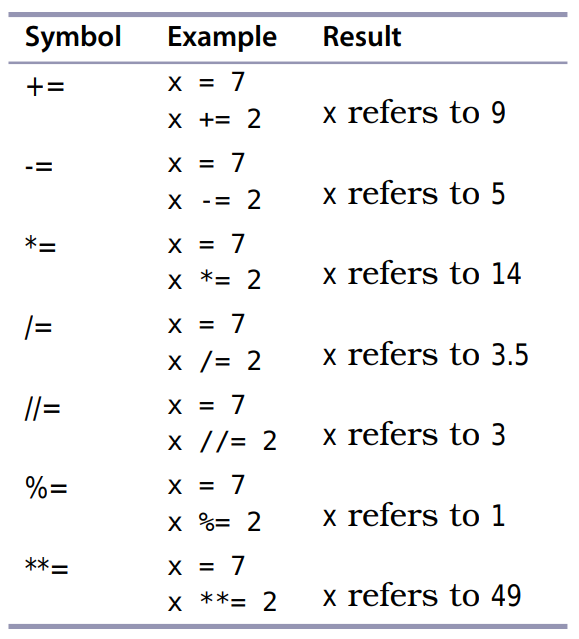

Fundamentals
Contents
Fundamentals#
Expression and Values: Arithmetic in Python#
The syntax of a computer language is a set of rules that tells you how you can combine operators and operands/value to write legal/correct Python expressions.
3 + 4
In the above expression:
3is a value or operand.+is an operator.4is a value or operand.The whole thing is called an expression.
3and4are called operands.
The expression 3 + 4 is evaluated to 7. When an expression is evaluated, it produces a single value.
The operand can be a value or another expression.
2 - (3 / 5)
In the above expression:
3is a value or operand.+is an operator.(3 / 5)is an operand which is an expression made of a values and operators.
Expressions do not have to involve an operator.
212
The above line is consider both an expression and a value.
4 + 13
17
Types#
Every value in Python has a particular data type, and the data types of values determine how they behave when they are combined. Values such as 4 and 7 have data type int (short for integer). Values such as 2.5 and 17.0 have data type float (short for floating point).
An expression involving two floats produces a float:
17.0 - 10.0
7.0
When an expression’s operands are an int and a float, Python automatically converts int to a float. That is why the following two expressions return the same answer.
17.0 - 10
7.0
17 - 10.0
7.0
You can leave out 0 after the decimal, e.g., 10., but this is considered bad style.
Arithmetic Operators#
Table 1 lists the arithmetic operators.

Operators that have two operands are called binary operators. Negation is a unary operator because it applies to one operand.
Addition, Subtraction, Multiplication, and Division#
The addition, subtraction, multiplication, and division operators are your familiar mathematical operators. One that when the operands are of mixed data type, meaning int and float, all the resulting value will be a float.
Integer Division, Modulo, and Exponentiation#
To know the integer part of a division result, use the integer division operator. For example, to know how many 24-hour days there are in 53 hours.
53 // 24
2
To find out how many hours are left over, you can use the modulo operator, which gives the remainder of the division:
53 % 24
5
Python does not round the result of integer division Instead, it takes the floor of the result of the division, which means that it rounds down to the nearest integer:
17 // 10
1
Be careful about using // and % with negative operands. Python takes the floor of the result of an integer division (//).
17 // 10
1
For the modulo operator, the sign of the result matches the sign of the divisors (the second operand)
-17 % 10
3
17 % 10
7
The following expression calculates 3 raised to the 6th power:
3 ** 6
729
Numbers in Python#
Python has the following number data types:
int- whole number, positive or negative, unlimitedfloat- number with decimals, positive or negativecomplex-7+3j
int vs float
Stored differently
floattake up a fixed amount of space.inttake up variable amount of space.intare stored asbignumdata type behind the scenes.
import sys
sys.getsizeof(2.0)
Out[3]: 24
sys.getsizeof(2**30)
Out[4]: 32
sys.getsizeof(2**130)
Out[6]: 44
Both
intandfloatcan store positive and negative numberstype()– used to figure out which type of data type it isfloatcan only represent approximations to real numbers because computers have finite amount of memory.2/3vs1/3
2 / 3
0.6666666666666666
5 / 3
1.6666666666666667
If you do not need fraction values, use int.
Working with large numbers#
10000000000 + 0.00000000001
The result should have twenty zeros between the first and last significant digit, but that is too many for the computer to store, so the result is just 10000000000—it is as if the addition never took place. Adding lots of small numbers to a large one can therefore have no effect at all, which is not what a bank wants when it totals up the values of its customers’ savings accounts.
If you have to add up floating-point numbers, add them from smallest to largest in order to minimize the error.
Better yet, use a specialized library (https://mpmath.org/) or (https://github.com/mdickinson/bigfloat)
Operator Precedence#
PEMDAS - use parenthesis to manipulate the order in which things are calculated. What is 8/2(2+2)?
Precedence:
Parenthesis
Exponentiation
Negation
Multiplication, division, integer division, and remainder
Addition and subtraction
212 - 32 * 5 / 9 What is wrong with this expression?
It is a good rule to parenthesize complicated expression even when you do not need to.
Variables#
Variables give names to values (number, string, or boolean). They are a container of information that a computer program will manipulate using a sequence of instructions. Variables names MUST follow certain rules and it is BEST to follow Python guidelines for naming.
Restrictions for variable names:
Start with letter or underscore.
The rest can have letters, underscore, and numbers.
symbols cannot be used in name
(@,+).Don’t use Python keywords or reserved words such as
print,str,int,float.
int = 3dodel intto restore python keywordprint = Yahdodel printto restore Python keyword
Conventions for variable names:
Use snake_case not camelCase for variable and function names.
Variables should be lowercase.
Upper case are used for constants
PI = 3.14.UpperCamelCase for classes.
__private__double underscore is convention that means you are not supposed access this variable directly. They are by convention like private variables in other languages.
Variable names are case sensitive, so ph and pH are two different names.
degrees_celsius = 26.0
This is called an assignment statement; we say that degrees_celsius is assigned the value 26.0. Whenever Python sees a variable in an expression, it substitutes the value to which the variables refers:
degrees_celsius = 26.0
9 / 5 * degrees_celsius + 32
78.80000000000001
Variables are called variables because their value can vary as the program executes.
degrees_celsius = 15.5
9 / 5 * degrees_celsius + 32
59.900000000000006
Values, Variables, and Computer Memory#
What happens when execute the following statement:
<<variable>> = <<expression>>
This is executed as follows:
Evaluate the expression on the right of the
=sign to produce a value. This value has a memory address. We can call this an object: a value at a memory address with a type.Store the memory address of the value in the variable on the left of the
=. Create a new variable if that name does not already exist; otherwise, just reuse the existing variable, replacing the memory address that it contains.
difference = 20
double = 2 * difference
double
difference = 5
double
number = 3
number
number = 2 * number
number
number = number * number
Augmented Assignment#
An augmented assignment combines an assignment statement with an operator to make the statement more concise. An augmented statement is executed as follows:
Evaluate the expression on the right of the
=sign to produce a value.Apply the operator attached to the
=sign to the variable on the left of the=and the value that was produced. This produces another value. Store the memory address of that value in the variable on the left of the=.

How Python Tells You Something Went Wrong#
There are two kinds of errors in Python: syntax errors and semantic errors.
syntax errors occur when you type invalid code, such as using a variable before it has been defined.
semantic errors occur when you tell Python to do something that it cannot do, such as divide by zero.
3 + moogah
2 +
12 = x
A Single Statement That Spans Multiple Lines#
If a single statement becomes too big, you can have it span multiple lines by either surrounded the statement by parenthesis or using the line-continuation character, which is a .
(2 +
3)
2 + \
3
Describing Code#
Sometimes it is helpful to write comments describing your code. Any time Python encounters the # character it ignores the rest of the line.
x * (x + 1) # secret formula
You can have multiline comments by surrounding your comments using triple quotes, either single quotes (') or double quotes (")
"""
This is a multiline comment.
Test 1234
"""
x * (x + 1)
'''
This is a multiline comment.
Test 1234
'''
x * (x + 1)
Simultaneous Assignment#
Useful when you want to swap values. So instead of doing this:
temp = x
x = y
y = temp
x, y = y, x
sum, diff = x+y, x-y – simultaneous assignment
Review#
Programs are made up of statements, or instructions. These can be simple expressions like 3 + 4 and assignment statements like celsius = 20 (which create new variables or change the values of existing ones). There are many other kinds of statements in Python, and we’ll introduce them throughout the book.
Every value in Python has a specific type, which determines what operations can be applied to it. The two types used to represent numbers are int and float. Floating-point numbers are approximations to real numbers.
Python evaluates an expression by applying higher-precedence operators before lower-precedence operators. You can change that order by putting parentheses around subexpressions.
Python stores every value in computer memory. A memory location containing a value is called an object.
Variables are created by executing assignment statements. If a variable already exists because of a previous assignment statement, Python will use that one instead of creating a new one.
Variables contain memory addresses of values. We say that variables refer to values.
Variables must be assigned values before they can be used in expressions.